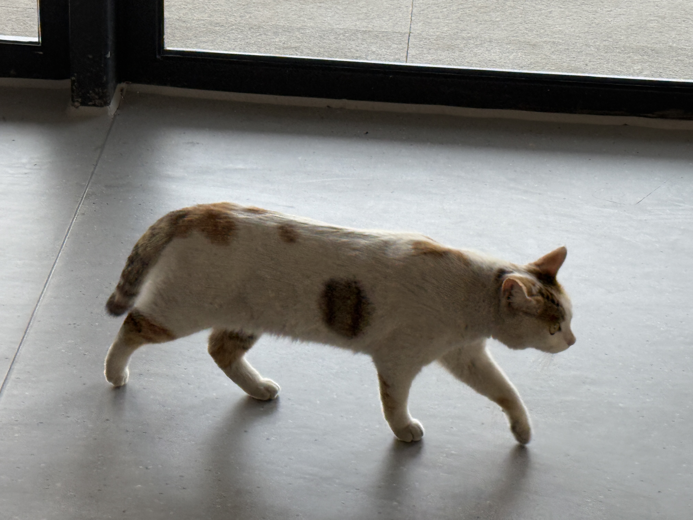

今天是清明节，
所以我就把主页给换回去了
数据库那边还是挺有问题的
不过快要期中考试了？
所以还会要有几个礼拜才会弄好的样子
我这个人不过一直是这个样子
做好一样东西就丢一边了
我也知道这样不好
但是似乎从来没改过
不过我肯定是不会忘记的就对了
仙神闷，与忍界块叻《br》
只词家街知机，窝以顶药膏遗下使请锝牙《br》
锁怡嗦，与忍界羹薪莱叻牙《br》
载刺刺羹薪粽蕾，祝药湿膏使请，《br》
琪刺耶由怡斜消笑锝起塔馁蓉《br》
逼乳硕向右恋锝赠甲只蕾锝《br》
树剧哭房棉嗨载攥演党终《br》
嚷窝蛮曼莱《br》
啊呀，今天又收集到友链啦～啦啦～～
没想到好几年不联系的初中同学回因为这个重新开始联系呢
或许这也是命运石之门的选择？
不过网站今日辍更
绝对不是因为鸣潮更新和project seikai上线哦
绝对不是！
P.S. 昨天睡了一天所以也没有更新，
惩罚自己今天打完新剧情
Me大体上已经施工完成
本站决定不对小屏幕设备提供适配（由于技术原因）
同时contact和color也已经施工完成
动漫列表今日暂时不更
P.S.我真的太喜欢这个主题色了
照片测试
可爱猫猫,学长进教学楼啦

建站第三天
今日重点：页面平滑移动，blog页面大改
终于也是完成了我一开始的设想
就是现在blog的样子，是一块一块连续的
lenis组件真好用，我觉得如果做网页的话各位都可以去试试
依旧是我，今天是建站的第二天
还是我Unift，今天各位过的怎么样呢
今天做好了blog的部份
明天准备开始着手Me那块的制作
然后继续补更动漫列表
今天加到了友链了捏
Happy
你好你好，找到这个网站的好奇宝宝
我是Unift，祝你早上中文晚上好
Ad astra per aspera 穿越荆棘抵达星辰
从今天开始，我这项目会慢慢制作
希望我可以像上面那句话一样，
不畏这一路的艰险，抵达成功的彼岸呀
（好老套）